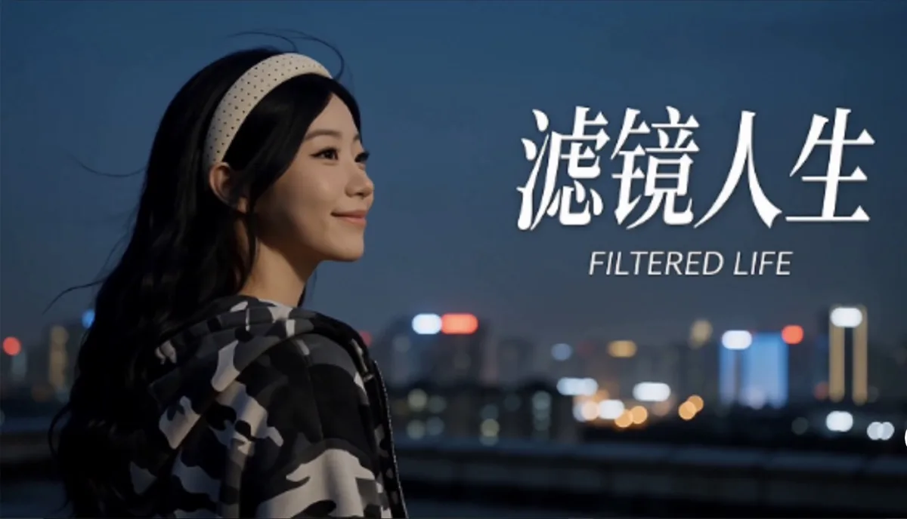
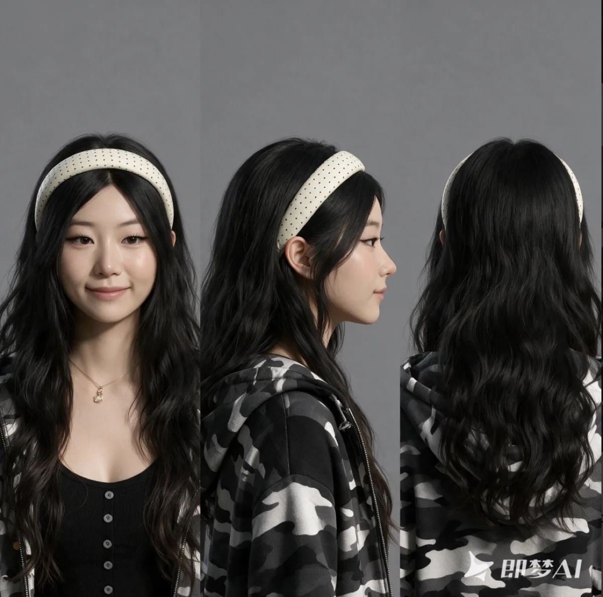

AI Film / PROJECT 11
滤镜人生 / Filter Life
《滤镜人生》是一支53秒的AI叙事短视频。
- ROLE
- 概念、AIGC 影像与视觉叙事
- TIME
- 项目年份待确认
- TOOLS
- MiniMax H3；个人照片三视图
- TYPE
- AI film
- STATUS
- Completed film / External video

01 / ONE-LINE CONCEPT
One-line concept
《滤镜人生》是一支53秒的AI叙事短视频。讲的是社交媒体P图焦虑的故事——我们花在P图上的时间比化妆还久，在社交媒体上展示的完美背后，是无数次推脸、缩鼻、调色。但P到最后，最累的是自己。这条视频想说的是：P图不是造假，是我们想把自己觉得好看的那一面留下来。而那个没P的、有点瑕疵的你，也一样真实。全程 MiniMax H3 生成，以本人照片制作三视图为人物原型。
02 / FROM CONCEPT TO FINAL FILM
From concept to final film
- 01
Concept
关注社交媒体修图焦虑：想留下好看的一面，也接纳没有修饰的真实自己。
已有：主题与故事说明。 - 02
Moodboard
从社交媒体、修图行为与个人形象出发建立叙事氛围。
已有：视频关键帧；独立灵感板未提供。 - 03
Storyboard
以展示完美、反复修改与回看自己作为故事线索。
根据主题整理；原始分镜脚本未提供。 - 04
Generation
使用 MiniMax H3 生成，以本人照片制作角色三视图。
已有：工具说明与角色三视图。 - 05
Consistency
用同一个人的照片和三视图建立人物参考，而不是每个镜头重新定义角色。
已有：角色参考图；跨镜头参数未提供。 - 06
Motion
围绕人物与屏幕互动呈现修图过程中不断调整的状态。
已有：关键帧与成片；独立运动测试未提供。 - 07
Editing
把社交媒体与修图焦虑整理为 53 秒短视频。
已有：成片；音乐来源与剪辑工程未提供。 - 08
Final film
滤镜人生 / Filter Life。
53 秒 · AI 叙事短视频。
03 / SELECTED FRAMES & VISUAL MATERIAL
Selected frames & visual material

04 / FINAL FILM
Final film
完整影片托管于飞书，可能需要登录或访问权限。本站保留关键画面与项目说明，不依赖外部视频加载。
- 类型：AI叙事短视频 / 53秒
- 制作：全程 MiniMax H3 生成，以本人照片制作三视图为人物原型
CONTINUE EXPLORING